|
|
|Instituto Tecnológico de Costa Rica|Escuela de Matemática| M. Sc. Geovanni Figueroa M. |
|
|
|
|Instituto Tecnológico de Costa Rica|Escuela de Matemática| M. Sc. Geovanni Figueroa M. |
|
|
¿ Qué es una ecuación diferencial ?
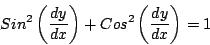
Esta ecuación es satisfecha por cualquier función en una variable que sea derivable. Otro ejemplo es
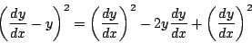
Es claro que lo que está detrás de esta ecuación es la fórmula notable 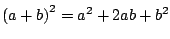; por lo que la ecuación es satisfecha por cualquier función derivable.
Nuestra atención se centrará sobre ecuaciones diferenciales
ordinarias . Una ecuación diferencial ordinaria es aquella
que tiene a
para algún entero positivo
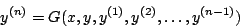
Ejemplo
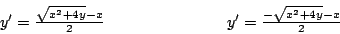
Las ecuaciones diferenciales se clasifican en varias categorías, como ya vimos, según su tipo en ordinarias y parciales, o según su linealidad u orden, como veremos.
De nuevo, la frase de manera no trivial tiene el fin de evitar situaciones como la siguiente
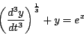
cuyo orden es uno y no tres, como podría pensarse.
Algunas veces decimos que la ecuación 1.5 es lineal con
coeficientes constantes si las funciones son constantes
para toda 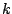, en caso contrario, decimos que es con coeficientes
variables. Por otro lado, si la función
Ejemplo
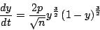
es de primer orden, no lineal y no homogénea. Esta ecuación
surge en sicología y representa un modelo del aprendizaje. La
variable
Ejemplo
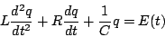
es de segundo orden, lineal con coeficientes constantes y no
homogénea. Esta ecuación diferencial surge en el estudio de
circuitos eléctricos que consisten de un inductor 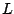, un
resistor
Ejemplo
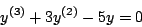
es de orden 3, lineal con coeficientes constantes y homogénea. La ecuación
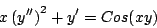
es de primer orden, no lineal y no homogénea. La ecuación
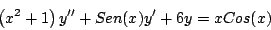
es de segundo orden, lineal con coeficientes variables y no homogénea. El concepto de orden también se extiende a las ecuaciones parciales como se muestra en el siguiente ejemplo.
Ejemplo La ecuación
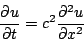
se conoce como la ecuación de calor y es de primer orden en La ecuación
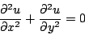
se conoce como la ecuación de Laplace y es de segundo orden en
La ecuación
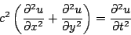
se conoce como la ecuación de onda y segundo orden en Las ecuaciones de Laplace, de calor y de onda poseen un importante significado en física teórica y su estudio ha estimulado el desarrollo de muchas ideas matemáticas relevantes. En general, las ecuaciones diferenciales parciales aparecen en problemas relacionados con campos eléctricos, dinámica de fluidos, difusión y movimiento ondulatorio. Su teoría es muy diferente de la de las ecuaciones diferenciales ordinarias y notablemente más difícil en casi todas sus facetas.
Subsecciones |